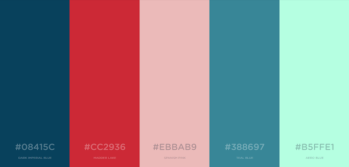

Fluent Design For Web
Controls
Styles
Home
Fabric UI
Styles
Typography
Elevation
Colors
Grid Layout
Icon Pack
Controls
Inputs
Utilities
Surfaces
List and Tables
Navigations
Progress
Buttons
Primary Buttons
Primary Blue
Primary Green
Primary Red
Primary Yellow
Primary Inverted
Secondary Buttons
Secondary Blue
Secondary Green
Frosted Buttons
Frost
Buttons
Large Frost Button
Overlay
Hover over overlay to see info

This Is Some Overlay Info
Snackbar
Click on the button to see a snackbar
Open Snackbar
This Is Some Snackbar Content, click somewhere else to close this snackbar